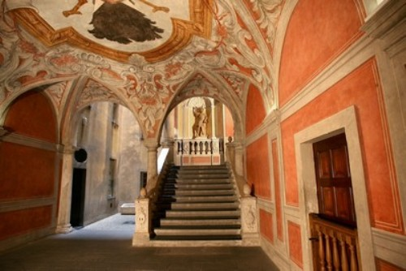
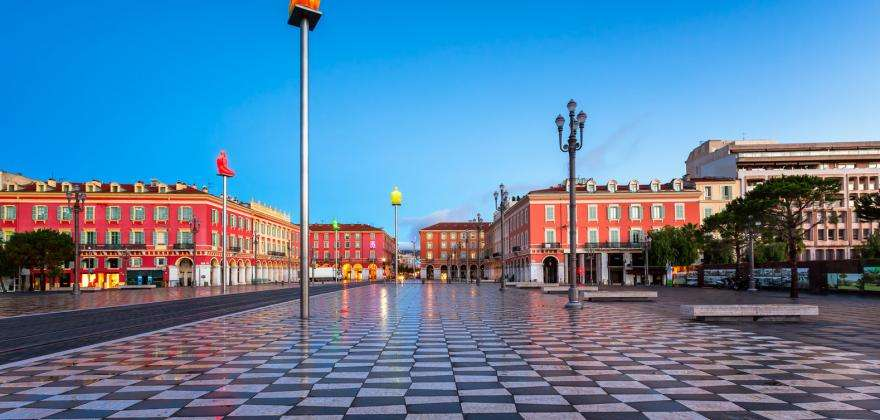
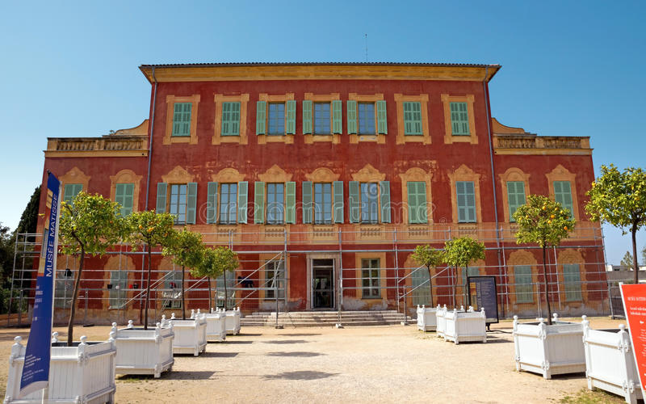

LUGARES ENBLEMATICOS DE NIZA
| NOMBRE | DESCRIPCIÓN | IMAGEN |
|---|
| Catedral de San Nicolás |
La catedra de san Nicolás es la catedral rusa ortodoxa más grande fuera de Rusia y uno de los lugares mas sorprendentes de Niza. esta iglesia se construyó en 1912 en honor a Zar Nicolás II de Rusia por una gran cantidad de rusos que se enamoraron de la ciudad y se quedaron a vivir allí decidieron construirla a unos cuantos Kilómetros del centro, sin embargo, esta joya arquitectónica a sido es una de las más turísticas por su historia y aunque tiene un ligero parecido con la Catedral de San Basilio de Moscú no deja de ser autentica. Fuente:https://www.viajeroscallejeros.com/lugares-que-ver-en-niza/ |
 |
| El Palacio Lascaris |
El Palacio Lascaris, de estilo barroco y situado en la Ciudad Vieja, es uno de los palacios que visitar en Niza más imprescindibles. Construido en el siglo XVII este palacio destaca por un ornamentado exterior al estilo de los palacios italianos y un recargado interior en el que se exhiben colecciones permanentes sobre la historia de la ciudad. Fuente: https://www.viajeroscallejeros.com/lugares-que-ver-en-niza/ |
 |
| Plaza Masséna |
La Plaza Masséna es la más bonita de la ciudad al encontrarse rodeada de antiguos edificios, en los que abundan las terrazas de restaurantes y cafés pintorescos. Además, esta plaza tiene una de las obras de arte más sorprendentes de la ciudad, 7 esculturas de personas arrodilladas situadas encima de un poste y que representan los 7 continentes. Sin duda esta plaza esta llena de estructuras invaluables y definitivamente el lugar indicado para caminar y viajar unos años atrás. Fuente: https://www.viajeroscallejeros.com/lugares-que-ver-en-niza/ |
 |
| Museo Matisse |
Ubicado en la Villa des Arenes, en Niza, el Museo Matisse alberga obras emblemáticas de valor incalculable, que cuentan con la particularidad de haber sido elegidas por el propio Matisse para conformar la actual colección. Sus piezas más famosas y destacadas conviven aquí: pinturas, dibujos, esculturas y fotografías que guardan el inconfundible sello del artista. Este museo se realizo en honor al pintor francés Henri Matisse, el cual vivió en Niza desde 1918 hasta su muerte, en 1954. Según dicen, se mudó allí cautivado por la vida, la luz y los colores Mediterráneos característicos de esta bellísima ciudad. . Fuente: https://sobrefrancia.com/2008/06/29/el-museo-matisse-en-niza/ |
 |